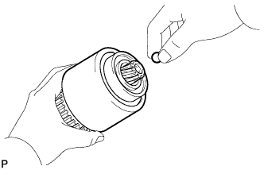
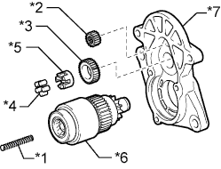
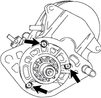
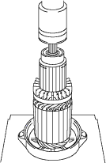
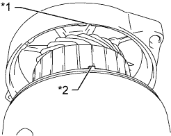
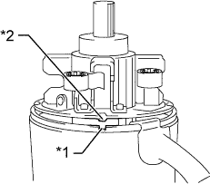
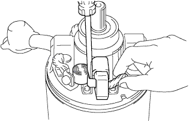
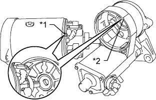

СТАРТЕР (для моделей мощностью 3,0 кВт) > ПОВТОРНАЯ СБОРКА |
| 1. УСТАНОВИТЕ ПУСКОВУЮ МУФТУ В СБОРЕ |
Нанесите термостойкую консистентную смазку на стальной шарик, возвратную пружину, ролик муфты, фиксатор, ведущую шестерню и промежуточную шестерню.
|  |
Вставьте стальной шарик в гнездо вала пусковой муфты.
Вставьте возвратную пружину в гнездо вала пусковой муфты.
|  |
Установите пусковую муфту, возвратную пружину, промежуточную шестерню, ведущую шестерню, фиксатор и ролик муфты.
| *1 | Возвратная пружина |
| *2 | Промежуточная шестерня |
| *3 | Ведущая шестерня (сателлит) |
| *4 | Ролик муфты |
| *5 | Фиксатор |
| *6 | Пусковая муфта |
| *7 | Корпус стартера |
|  |
Установите корпус стартера на втягивающее реле стартера и закрепите его 3 винтами.
| 2. УСТАНОВИТЕ ЯКОРЬ СТАРТЕРА В СБОРЕ |
|  |
Нанесите термостойкую консистентную смазку на подшипники якоря.
С помощью пресса запрессуйте якорь в раму со стороны коллектора.
Установите новое кольцевое уплотнение на статор стартера.
|  |
Совместите канавку в раме со стороны коллектора с захватом статора стартера и установите якорь и раму со стороны коллектора.
| *1 | Канавка |
| *2 | Захват |
| 3. УСТАНОВИТЕ ЩЕТКОДЕРЖАТЕЛЬ СТАРТЕРА В СБОРЕ |
|  |
Совместите захват щеткодержателя стартера с канавкой в статоре стартера.
| *1 | Канавка |
| *2 | Захват |
Поместите щеткодержатель стартера на статор стартера.
|  |
Подсоедините 4 щетки к щеткодержателю стартера.
С помощью отвертки оттяните пружину.
Подсоедините щетку к щеткодержателю.
Установите новое кольцевое уплотнение на статор стартера.
| 4. УСТАНОВИТЕ СТАТОР СТАРТЕРА В СБОРЕ |
|  |
Совместите захват щеткодержателя стартера с канавкой втягивающего реле стартера и установите статор стартера на втягивающее реле.
| *1 | Захват |
| *2 | Канавка |
Установите статор стартера на корпус стартера и закрепите 2 болтами.
Подсоедините вывод к контакту C и закрепите его гайкой.